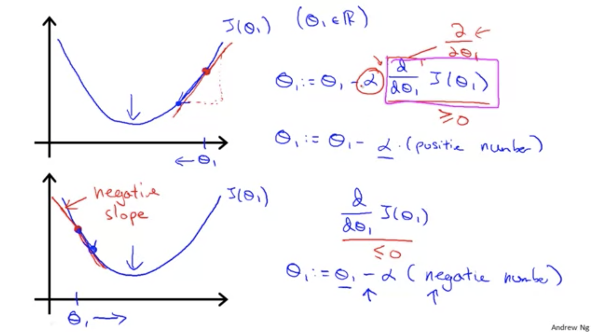
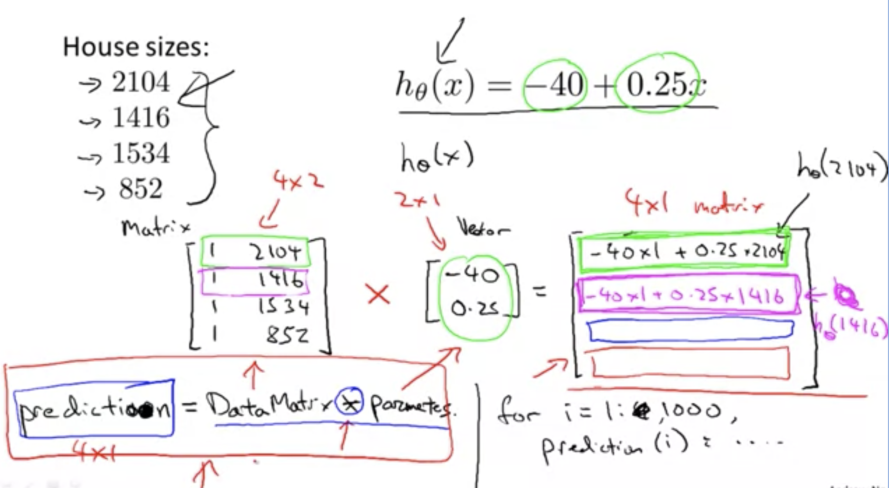
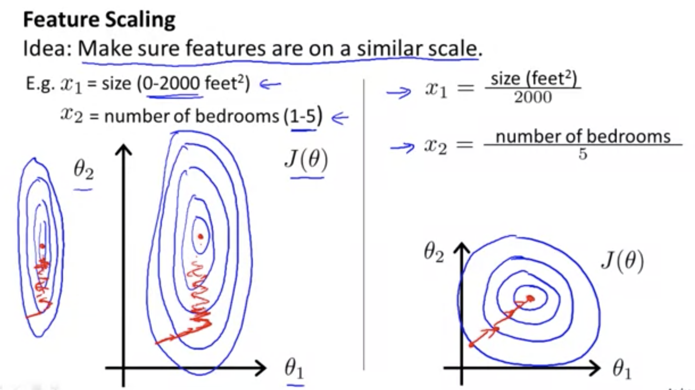

..
机器学习
机器学习的思考故事
吴恩达
Machine Learning
Week1
- 学习算法，模拟人类大脑的学习方式
- Machine Learning defined by Arthur Samuel(1959), ability to learn without explictly programmed
- E, T, P
- Supervised Learning
- 给出现有的结果集(Right Answers for each example)，去推导因果关系
- Regression Problem, 回归问题, 预测的是 连续的数据
- Classification Problem, 分类问题，预测的是 有限的取值
- Infinite number of features, 无限的特征和属性
- UnSupervised Learning
- No labels
- clusters，聚类
- 工具: octave
- 鸡尾酒会效应(cocktail-party-effect), 人们可以在嘈杂的环境进行交谈，忽略掉背景噪声而听到对方的谈话。属于 图形-背景现象 的听觉版本
线性代数算法
- Training Set
- m: numbers of training examples
- x’s = input / features
- y’s = output / target variable
- training example
- case of i, i 为 index
- h hypothesis, 假设
- linare regression with one variable
- univariate linear regression 单变量线性回归
- 目标, 找到最小值:
- Cost Function 定义为
- 目标: 为平方差代价函数
- 目标: 导数为 0 的那个 的值
| Hypothesis(假设) | Paramemters(参数) | CostFunction | Goal |
|---|---|---|---|
梯度下降算法 Gradient Descent
每次寻找对应的 ，使得下面的值越来越小
步骤:
- 为 learning rate，越大代表下降越快。
-
需要同时更新 的值

- 通过斜率的变化，来动态调整参数的值，使得达到收敛(converge)的点, 也就是图中的最低点的位置
- 偏离 diverge
- 很小，则找到具体的点会比较慢, 过大，则容易错过最优点
-
根据导数的值的大小，动态地调整 的值
- convex 凸函数(bowl shaped function)
第一个机器学习的算法
在这之前，需要复习几个求导法则。有助于理解下面的公式计算
假设 均可导, 则
| Hypothesis(假设) | Paramemters(参数) | CostFunction | Goal |
|---|---|---|---|
-
对 CostFunction 求导数
-
将 导数 部分代入到 梯度下降算法中
metrics 和 vectors
下面为一个 2 x 3 的矩阵
为 第 i 行，第 j 列的值，注意 i，j 都是从 1 开始的
vector: n x 1 的矩阵, 如下为 3维 vector
- 矩阵的乘法:
- 1-indexed vs 0-indexed vector
- 大写字母表示矩阵，小写字母表示向量
- 矩阵运算见这里
- scalar 标量，raw number
- 使用 矩阵运算，而不是 for 运算，能够更加简洁，高效地计算。 
- 不满足交换律: (not commutative)
- 满足结合律: (associative)
- 单位矩阵，Diagonal or Identity Matrix：
- 单位矩阵满足：
- 逆矩阵 matrix inverse。 则 为 A 的 逆矩阵 (A为 mxm 矩阵，也就是 square matrix, 方阵)
- 奇异矩阵 sigular matrix，没有逆矩阵的矩阵
-
转置矩阵 transpose matrix
- octave 中矩阵的操作可参考这里
Week2
使用 vector 和 matrix 来表示 multi feature hypothesis，多维度的假设函数
其中 和 均为 vector
使用矢量/矩阵来实现多特征梯度下降 (multi feature gradient descent)
| Hypothesis(假设) | Paramemters(参数) | CostFunction | Goal |
|---|---|---|---|
Gradient Descent
-
feature scaling, 将特征值进行缩放，使得图形能够更快地收敛

- 使得所有的特征的值接近 的区间，建议是差别不超过三倍
- Mean Normalization, 归一化 , 其中 为特征 x 的均值, s 为(最大值-最小值) 或者是标准差
- 特征缩放不需要非常准备
- 选择 (Learning rate) 的技巧。变小的幅度小于 便可停止了
- Polynomial Regression 多项式回归, 如
- Polynomial Regression 的参数的 scaling 很重要，因为数值会随着 的 n 指数型增长
- 模型变量的选择：可以是原始变量的组合。
-
Normal Equation, 一次性求解出所有的 ，类似于解矩阵方程的思路，下面是结果。参考 机器学习笔记03：Normal equation与梯度下降的比较 其中 m 为样本数，n 为特征数 和 复杂度分析
Hypothesis(假设) features Paramemters Normal Equation Answer - Normal Equation 不需要做 feature scaling，但是在 n 比较大(>10000)的时候比较慢，计算 的复杂度为
- 什么时候矩阵是奇异矩阵，见这里
octave tutorial
a = 1:0.1:2 % 从 1 到 2 以 0.1 为步长
zeros(2, 3) % 2行3列的全是0的矩阵
ones(2, 3) % 2行3列的全是1的矩阵
rand(2, 3) % 2行3列的【0到1之间的】随机数的矩阵
randn(1, 3) % 平均值为0，方差为1的高斯分布的随机矩阵
w = -6 + sqrt(10) * (randn(1, 10000)); hist(w) % 画出直方图(histogram)
eye(10) % 单位矩阵，eye 代表的是 I 的意思
pwd % 当前的路劲 类似还可以用 cd, ls 等
who % 查看当前的作用域 whos
save % 保存矩阵到对应的文件 save new.dat v
C = [3 4;2 2] % 可以省去逗号
1./C % =[1/3 1/4; 1/2 1/2]
plot
% 还可以设置坐标名称，线名称，颜色等等
t = [0:0.01:0.98]
y1 = sin(2 * pi * t)
plot(t, y1)
hold on % 画第二个图
y2 = cos(2 * pi * t)
plot(t, y2)
xlabel("横坐标")
ylabel("纵坐标")
legend("线的定义")
title("图片标题")
print -dpng % 保存文件
close % 关闭
% 定义图一和图二
figure(1); plot(t, y1)
figure(2); plot(t, y2)
% 将图分隔展示
subplot(1,2,1);plot(t, y1)
subplot(1,2,2);plot(t, y2)
% 修改中轴线
axis
vectorization
将数值运算，变成矩阵运算
Week3
分类 classification